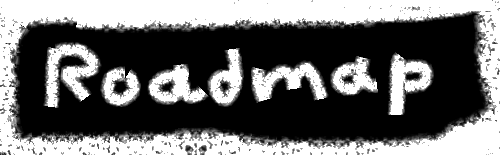

Collection of 10,000 collectibles and unique algorithmically generated memecoins, get an unique avatar for futurs socials networks


Hey all you meme-loving crypto enthusiasts out there! Here's the roadmap for POOP
CITIZENS MemeCoin.Here's what's in store from 2024 to 2030:
2024: The Birth of POOP CITIZENS MemeCoin
In 2024, POOP CITIZENS will burst onto the scene, propelling the world of
cryptocurrencies into a new era of absurdity and joy. With features as wacky as they are
powerful, POOP CITIZENS will shake up traditional finance with a healthy dose of
humor.
2024-2030: Wild Promotion and memecoin Collection
Over the next six years, we're going all out to promote POOP CITIZENS and build a
community as tight-knit as it is outrageous. With marketing campaigns that are
completely bonkers and partnerships that are off-the-wall, we're going to spread the
word about POOP CITIZENS far and wide.
At the same time, we're diving headfirst into a totally absurd adventure with memecoin.
From 2024 to 2030, we'll be creating a collection of memcoins that's as wild as your
craziest dreams. From absurd artworks to utterly ridiculous items, we're turning the memecoin
game on its head.
Using memecoins as Celebrity Avatars
One of our wildest goals is to get celebrities on board with POOP CITIZENS memecoins. Picture
this: your favorite celeb rocking an POOP CITIZENS memecoin as their profile picture, showing
off their support for our crazy ecosystem. It's not just about making headlines; it's
about proving that even the biggest stars can't resist the allure of a good meme.
Conclusion
The years ahead are going to be a wild ride for POOP CITIZENS and its memecoin universe. With
a roadmap that's as absurd as it is ambitious, we're rewriting the rules of finance with
a smile on our faces. So buckle up, hold onto your hats, and get ready for the meme-iest
adventure of your life!